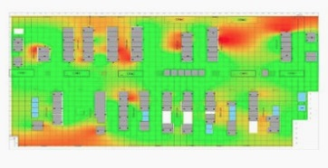

<ion-grid>
  <ion-row>
    <ion-row>
        <ion-card class="card1">
            <ion-card-header>
              Derroche y contaminación en el centro de datos MAD1
            </ion-card-header>
            <ion-card-content>
              El comportamiento térmico del centro de datos MAD1 requiere actuar con urgencia. Los 
              sistemas de refrigeración están gastando innecesariamente más de 20.000 euros al día.
              Para el medio ambiente, esto es equivalente a poner en circulación 14.000 vehículos diesel.
            </ion-card-content>
            <br><br>
          </ion-card>
    </ion-row>
  
    <ion-row>
      <ion-col size="12" size-md="5">
        <br><br><br><br>
        
      </ion-col>
      <ion-col size="12" size-md="7">
          <ion-row justify-content-center class="textoRecomendacion">
              <p> Recomendación</p>
            </ion-row>
            
            <ion-row justify-content-center>
              <ion-col>
                <ion-card class="rectangulo">
                  <ion-card-content>
                    <ion-icon name="eye" class="icon2"></ion-icon>
                    <p>Sensores de temperatura de
                      salida del aire y software de
                      detección de anomalías térmicas
                      <br>
                      <br>
                      <b float-left>Coste</b>
                      <b float-right>Riesgo</b>
                    </p>
                  </ion-card-content>
                </ion-card>
              </ion-col>
              <ion-col>
            
                <ion-card class="rectangulo">
                  <ion-card-content>
                    <ion-icon name="people" class="icon2"></ion-icon>
                    <p>Sistema de reputación para la
                      combinación automática y
                      adaptativa de optimizaciones
                      <br>
                      <br>
                      <b float-left>Coste</b>
                      <b float-right>Riesgo</b>
                    </p>
            
                  </ion-card-content>
                </ion-card>
            
              </ion-col>
            </ion-row>

      </ion-col>
    </ion-row>
  </ion-row>
  
  </ion-grid>
